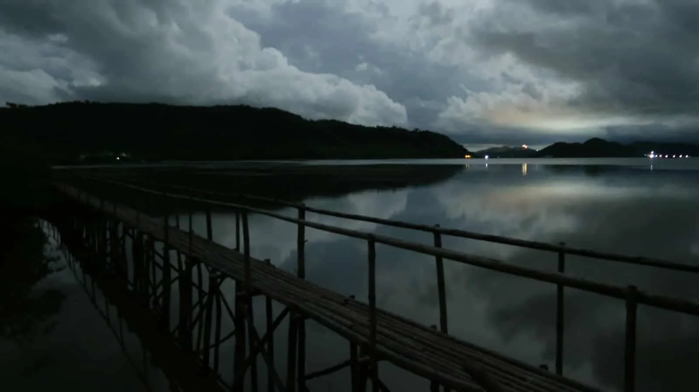
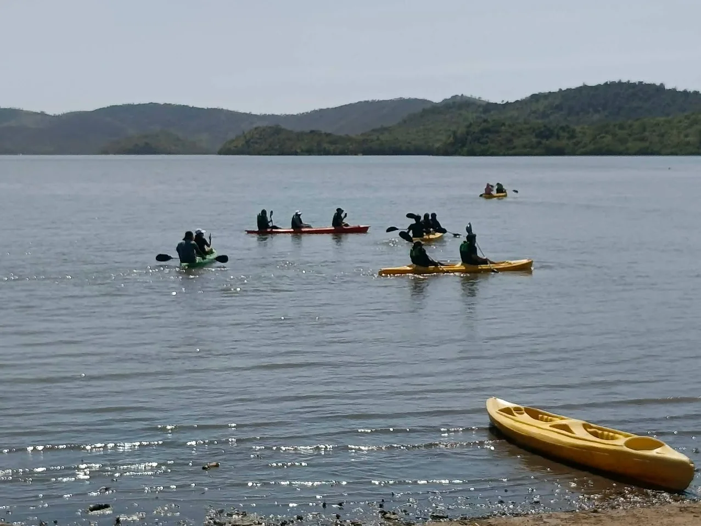
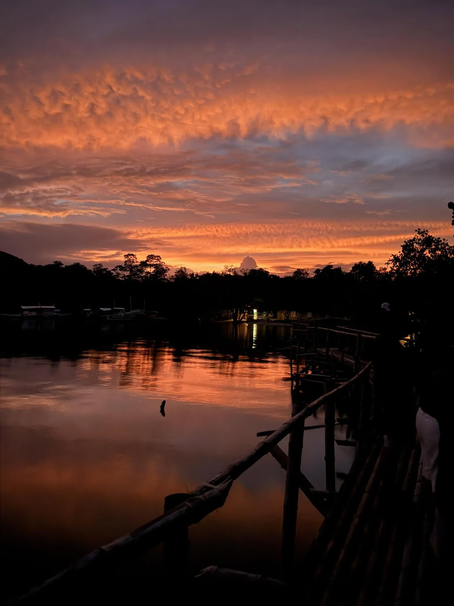

No flash photography
Avoid flash around fireflies and follow photography guidance from the park or guide.

Find current operating hours, practical reminders, responsible-viewing guidance, and information about planning your visit.
Start with the essentials: when the park is open, which experiences fit your visit, how tide conditions affect kayaking, and how to move through the park responsibly.
Kingfisher Park changes character from afternoon to evening. Think of your visit as a simple progression rather than a fixed itinerary.
COMPARE EXPERIENCESBegin with the mangrove landscape and daytime experiences while the park is still bright.

Watch the landscape settle into evening and prepare for the park's after-dark experiences.

Experience the Firefly Boardwalk and, when conditions allow, kayaking for bioluminescent plankton and additional firefly viewing.
Simple visitor habits help keep the experience calm, safe and considerate of the firefly habitat and the wider natural setting.
Avoid flash around fireflies and follow photography guidance from the park or guide.
Keep voices and unnecessary noise low so the experience remains respectful of wildlife.
Listen to park and guide instructions, especially around water, dark paths and viewing areas.
Wear comfortable clothing and suitable footwear for dark or uneven outdoor conditions.
Wind, tide, weather, moonlight and natural behavior can influence what visitors experience.
For firefly tours, apply insect repellent before entering the park. Avoid spraying repellent near the firefly-viewing area, and do not touch or catch fireflies.
See the mangrove waterways and boardwalk landscape. For arrival arrangements, meeting instructions and facility details, confirm with Kingfisher Park staff before your visit.
MESSAGE PARK STAFFOpen a concise guide with current hours, experiences, rates, tide notes and responsible-viewing reminders.
Choose your experience, select your preferred date and time, and plan your visit to Kingfisher Park.
START BOOKING